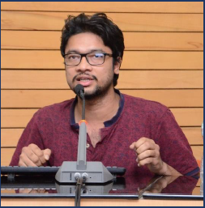

|

Anurendra Kumar
M.S., Computer Science (Concentration- Bioinformatics)
UIUC, Phone : +1-2178198065
E-mail : ak32@illinois.edu, anu.ankesh@gmail.com
About Me
I am a Master's student at the Department of Computer Science at UIUC (2019-2021). Broadly, my research interest lies in mathematical modeling of real world problems. My recent emphasis has been on, i)Attention mechanisms for deep learning, and ii)Biologically aware machine learning algorithms. I graduated with a B.Tech-M.Tech dual degree(2012-2017) in Electrical Engineering from IIT Kanpur. It also included minors in Artificial Intelligence and Linguistics.
Research Interest
Machine Learning; Computational Biology
Recent Projects
Web Information Extraction
P.I.- Kevin Chang, Funded by UIUC IBM Collaboration
Developed a large dataset and a novel scalable Deep learning architecture for web information extraction. Inspired by the recent advances in NLP, we propose a self attention based architecture for optimal contextual learning. The proposed model is promising because- i)it is optimized to exploit semi-structured data such as a webpage, ii)can extract multi-dimensional features, all of which can be trained separately.
Gentotype to Phenotype Modeling
P.I.- Saurabh Sinha
Developing probabilistic graphical models to understand how genes interact amongst themselves and how epigenomics and genotype effect phenotypic features.
Publications
- Anurendra Kumar, T.Guha and P.Ghosh "A Dynamic Latent Variable Model for Source Separation", Accepted in ICASSP'18: We propose a novel latent variable model for learning latent bases for time-varying non-negative data. We connect our proposed dynamic Dirichlet latent variable model (dynamic DLVM) model to the two popular latent basis learning methods - probabilistic latent component analysis (PLCA) and non-negative matrix factorization (NMF). We show that (i) PLCA is a special case of the dynamic DLVM, and (ii) dynamic DLVM can be interpreted as a dynamic version of NMF. The effectiveness of the proposed model is demonstrated through extensive experiments on speaker source separation, and speech-noise separation.
[Link]
- Anurendra Kumar, T.Guha and P.Ghosh "Dirichlet Latent Variable Model: A Dynamic Model
Based on Dirichlet Prior for Audio Processing"
, Submitted in IEEE Transactions audio speech and language-processing [Link]
- Laxmi Pandey, Anurendra Kumar, Vinay Namboodiri "Monoaural Audio Source Separation Using Variational Autoencoders"
[Accepted in Interspeech'18]: We introduce a monaural audio source separation framework using latent generative model. We propose a generative approach using variational autoencoders (VAE) for source separation.Experimentally, we find that the proposed framework yields reasonable improvements when compared to baseline methods available in the literature i.e. DNN and RNN with different masking functions and autoencoders. We show that our method performs better than best of the relevant
methods with ∼ 2 dB improvement in source to distortion ratio. [Link]
References
Prof. Tanaya Guha
Electrical Engineering, IIT Kanpur
Cell : +91-9005512034
E-mail : tanaya@iitk.ac.in
URL : http://tanayag.com/Home.html/
|